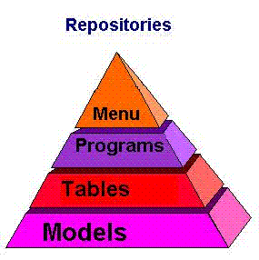
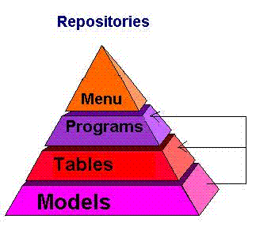

|
| |||||||||||||||||||
Questo modulo pone le basi per lo sviluppo di applicazioni in Janox.
Al termine di questo modulo sarai in grado di:
Ogni applicazione Janox è tipicamente formata da quattro fasi:
- Models - Definizione dei tipi dato dell'applicazione per l'utilizzo in tabelle e programmi
- Tables – Definizione di tabelle di database ove l'applicazione memorizzerà i dati
- Programs – Creare la logica per l'interazione tra l'utente finale e le tabelle del database (le funzionalità dell'applicazione)
- Menus – Creare i menu che abilitano l'utente finale ad utilizzare i programmi dell'applicazione
Quando si sviluppa una applicazione con Janox può essere di grande aiuto tenere sempre ben presenti queste fasi.
Il diagramma a piramide è molto importante per capire le fasi dello sviluppo dell'applicazione. Capire il diagramma renderà più semplice scrivere l'applicazione.
Ogni fase della stesura dell'applicazione è locicamente collegata alla fase successiva.
Il risultato di ogni fase viene memorizzato in un repository (contenitore) - un model repository, un table repository, un program repository, e un menu repository.
0.4.1.1 Definire i models - datatypes
Un modello è un insieme di proprietà per un certo campo (field).
Ogni volta che si decide di realizzare un'applicazione in Janox si inizia con la definizione di questi modelli. Per semplificarne la successiva identificazione è molto meglio dare ai modelli, e agli oggetti che vedremo in seguito, da subito nomi significativi.
Proprietà di un Data-type
Ogni oggetto dell'applicazione ha delle proprietà. Un modello data-type è composto da un insieme di proprietà che vengono ereditate dagli oggetti di più alto livello nella piramide dell'applicazione (tables, programs...).
- Id
- Type ("Alpha", "Number", "Logical", ecc.)
- Mask (Maschera di formattazione I/O del dato)
0.4.1.2 Definire le tables
La seconda fase dello sviluppo di una applicazione consiste nel definire le tabelle per l'applicazione. Le colonne di ogni tabella ereditano il loro contenuto dai modelli che il programmatore ha definito precedentemente nel model repository.
Una tabella è un set di record che hanno la stessa struttura sotto lo stesso nome.
Un indice è un criterio di ordinamento dei dati di una tabella.
Una tabella può avere uno o più indici e gli indici devono essere tutti univoci.
0.4.1.3 Creare i programs
La terza fase consiste nella creazione dei programmi che eseguano le logiche dell'applicazione e fungano da interfaccia tra l'utente finale e le tabelle del database.
I programmi sono gli strumenti con cui l'utente finale può manipolare i dati ed è il programmatore a decidere quali dati e che tipo di manipolazione su essi sia permessa.
In Janox non esiste una differenza netta tra programmi online, cioè programmi con un'interfaccia di interazione con l'utente, e programmi cosiddetti batch, cioè procedure con un predefinito flow esecutivo e nessuna interfaccia interattiva. Infatti in Janox un singolo programma può mutare aspetto a seconda delle situazioni senza che il programmatore debba definirlo in differenti modi.
0.4.1.4 Creare i menus
Il quarto ed ultimo step consiste nell'associare i programmi alle voci dei menù in modo da permettere all'utente finale di navigare attraverso l'applicazione.
I menu sono lo strumento principale che permette all'utente finale di accedere alle funzionalità dell’applicazione.
Il diagramma a piramide mostra anche il meccanismo di ereditarietà che esiste tra i repository dei modelli, delle tabelle, e dei programmi:
Gli oggetti nelle tabelle e nei programmi ereditano le proprietà definite nei modelli su cui sono basati.
Tale meccanismo offre i seguenti benefici al programmatore:
- Riduzione dei tempi di sviluppo dell'applicazione. Una volta creato un modello, il programmatore non deve ogni volta definire le proprietà sugli oggetti del suo tipo.
- Manutenzione dell'applicazione semplificata. Una volta associati gli oggetti ai loro modelli, ogni modifica alle proprietà dei modelli è automaticamente ereditata dagli oggetti associati.
Esempio:
Definendo un modello per il campo "codice_cliente" come alfanumerico lungo 5 caratteri, lo si può utilizzare come campo di tabella o come variabile di programma. Se durante lo sviluppo diventasse necessario variare i campi di questo tipo e portarli a 6 caratteri, basterà variare il modello e il meccanismo di ereditarietà garantirà che tali modifiche abbiano effetto su tutti gli oggetti dell'applicazione basati su tale modello.
| © 2008 Software4U.it | ||||